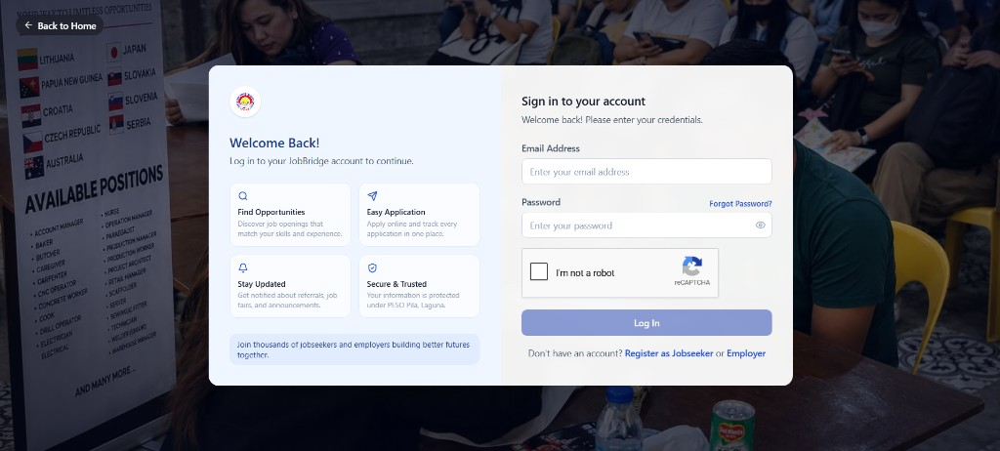

Capstone project · BS Information Technology · Laguna State Polytechnic University
JobBridge
An intelligent chatbot and OCR-assisted job matching and employment monitoring system for the Public Employment Service Office of Pila, Laguna.
Project overview
One platform for the work PESO Pila already does by hand.
The Public Employment Service Office of Pila, Laguna connects jobseekers and employers and reports labor market information to the Department of Labor and Employment. Before JobBridge, staff kept profiles, vacancies, referrals, and outcomes in separate files and spreadsheets. Matching, document encoding, job-fair schedules, and reports were done manually.
JobBridge is a web application for that office. It brings registration, employer accreditation, vacancies, referrals, SPES, manpower-skills training, DILP, OWWA assistance, job fairs, interviews, employment monitoring, and labor market reports into one role-based system. A chatbot answers employment inquiries from office data. A document pipeline reads resumes and fills profile fields for the jobseeker to check. A matching engine ranks vacancies against an applicant’s record.
The study used a descriptive-developmental design. It was prepared by Wendell D. Ramos, Brian S. Lueruang, and John Kenneth P. Perez in partial fulfillment of the Bachelor of Science in Information Technology, major in Web and Mobile Application Development, College of Computer Studies, Laguna State Polytechnic University, Sta. Cruz, Laguna. The manuscript is dated May 2027.
What the system is for
PESO staff get less manual encoding, a labor market dashboard, and DOLE-aligned reports. Jobseekers can inquire, see matches, and follow an application without visiting the office for every status check. Employers post vacancies, review match scores, and schedule interviews. The platform is a decision-support tool: matches, extracted fields, and chatbot replies stay subject to review. The system does not decide hiring, accreditation, or eligibility for government assistance.
Aligned with SDG 8 (decent work), SDG 9 (innovation), and SDG 10 (reduced inequalities), as stated in the manuscript.
Wendell D. Ramos
Researcher
Brian S. Lueruang
Researcher
John Kenneth P. Perez
Researcher
Mia V. Villarica, DIT
Thesis adviser and Associate Dean, College of Computer Studies
Statement of the problem
Six operational gaps found at PESO Pila.
The researchers established these through staff interviews, direct observation, and records review, rather than treating them as assumed facts.
Applicants and vacancies are matched by staff reviewing records, with no standard way to compare qualifications.
Employment inquiries are available only during office hours.
Resumes and certificates are read and encoded by hand, which is slow and prone to error.
Job fairs and interviews are scheduled on paper, which leads to conflicts and delays.
Employment outcomes sit in paper records that are not always updated, so DOLE labor market reports are hard to complete.
Referrals, accreditation, and other transactions live in separate files, with no single platform for PESO services.
Research objectives
Design it, prove it works, and ask the people who would use it.
The study aimed to design, develop, test, and evaluate a secure online employment service for the PESO of Pila, aligned with the Citizen’s Charter. Chapters IV and V report four specific objectives.
Analyze and document existing PESO employment service processes and identify the functional and non-functional requirements.
Design and develop JobBridge with digital PESO modules, a retrieval-augmented chatbot, resume extraction, TF-IDF and cosine similarity matching, real-time monitoring, and a role-based dashboard with labor market analytics and DOLE-aligned reports.
Determine technical performance: functional correctness, chatbot grounding, Gemini extraction, job matching, efficiency, reliability, security, and integration.
Evaluate acceptance among jobseekers, employer representatives, and PESO staff for software quality, ease of use, usefulness, attitude, intention to use, experience, and overall acceptance.
Methodology
Describe the office, build the system, then test both the software and the users’ judgment.
Design and locale
Descriptive-developmental research in three phases: describe current PESO Pila processes, build JobBridge with Agile software development, and evaluate it technically and with users. An input-process-output-outcome model sits beside the Agile life cycle so the research logic stays visible.
The site is the PESO of Pila, a third-class municipality in Laguna. The 2024 census counted 57,776 residents across 17 barangays. The office operates under Republic Acts 8759 and 10691.
Who took part
The accessible population was 562 people: 469 registered jobseekers, 88 accredited employer representatives, and 5 PESO staff and administrative personnel.
Slovin’s formula at a 5 percent margin of error, applied to the 557 jobseekers and employers, gave 233 respondents. Proportional allocation produced 196 jobseekers and 37 employers. All 5 staff members were included. The evaluation sample is 238.
How it was measured
Requirements came from interviews, observation, document review, and brainstorming. Ten IT professionals ran black-box testing in person on a staging deployment with approved test accounts. They were assigned modules outside their own prior involvement.
The questionnaire combined ISO/IEC 25010 quality factors, the Technology Acceptance Model, a separate experience scale, and overall acceptance. Answers used a five-point scale from Strongly Disagree to Strongly Agree. Weighted mean and Cronbach’s alpha were the statistical tools.
Development sequence
Requirements. Citizen’s Charter workflows, interviews with PESO staff, and observation of registration, encoding, matching, job fairs, and reporting.
Design. Role-based modules, database structure, chatbot grounding, and matching parameters, reviewed with the adviser and subject expert.
Build. Iterative Agile development of the four roles and the PESO service modules.
Test. 103 cases across functional, integration, chatbot, document extraction, matching, performance, security, reliability, and critical logic.
Evaluate. User acceptance questionnaire administered to the 238-person sample.
Scope boundaries
The study covers PESO Pila only. It does not include other PESO offices, DOLE regional systems, or PhilJobNet. It does not process payroll, online payments, or employment contracts, and it does not forecast the labor market. Chatbot answers are limited to employment inquiries. Extraction quality depends on the uploaded file. Matching depends on the completeness of the records people provide. The system needs a stable internet connection.
Interview evidence included a session with PESO Manager Jayson Palasin, documented in the manuscript.
System architecture and technologies
Four layers, with the model kept outside the hiring decision.
Select a layer. The stack below is the one reported in the manuscript’s hardware and software table.
Jobseekers, employers, PESO staff, and the administrator use a React 19 and Vite interface in a current desktop or mobile browser.
The manuscript describes a completed layered architecture: presentation, application logic, data, and external AI services, coordinated with Socket.IO. Implementation confirmed that those layers operate as designed.
React 19ViteFlaskJWTbcrypt
Supabase PostgreSQLQwen3.6-27BGemini 3.1 Flash Lite
TF-IDFCosine similaritySocket.IOWeasyPrint
The system repository deploys the interface on Vercel and the API on Render. Those hosts are deployment choices in the repository, not a finding of the evaluation.
System features
Sixteen requirements, each implemented and then tested.
Accounts and roles
Jobseekers and employers register with email verification. An administrator creates PESO staff. The administrator account is pre-seeded. Each role has its own dashboard.
Jobseeker and employer records
Jobseekers keep a profile. Employers go through accreditation and manage the company record used for vacancy posting.
Posting and applications
Employers publish vacancies. Applications and PESO referrals move through a tracked pipeline, with history kept for each change.
TF-IDF recommendations
scikit-learn ranks a vacancy against skills, position history, experience, education, location, and employment-type preference, and shows why a job matches.
Grounded chatbot
A Groq-hosted Qwen3.6-27B assistant answers employment questions with SQL-grounded, role-aware retrieval. It is not an open web search.
Resume reading
Gemini 3.1 Flash Lite extracts resume fields into a checked schema. The jobseeker reviews and corrects the fields before they are saved.
SPES, training, DILP, OWWA
Staff process referrals and applications for the Special Program for Employment of Students, manpower-skills training, the DOLE Integrated Livelihood Program, and OWWA assistance.
Job fairs and interviews
Staff schedule job fairs. Employers schedule interviews, record results, and keep a calendar alongside the list.
After the hire
Employment monitoring follows deployment, probation, regularization, and separation, with exports for reporting.
Labor market dashboard
Administrators and staff see municipal counts, employment and placement rates, and a jobseeker labor profile for DOLE-aligned reporting.
Live notifications
Socket.IO posts alerts for approvals, announcements, and program updates. Messages can be filtered as unread, read, or archived.
Security and audit
Role checks, session handling, and an audit trail record administrative actions. Tests checked that one role cannot open another role’s data.
System screens
The deployed interface, not a redrawn mockup.
Choose a screen. Select the image to enlarge it. Counts inside the dashboards are whatever the live system held when the screen was captured.

Results and evaluation
Every planned test passed. Users strongly agreed.
| Area | Measure | Result |
|---|---|---|
| Functional / black-box | Cases passed | 28 of 28 |
| Integration | Cases passed | 10 of 10 |
| AI chatbot / RAG | Cases passed | 10 of 10 |
| OCR / Gemini extraction | Cases passed | 10 of 10 |
| TF-IDF job matching | Cases passed | 10 of 10 |
| Performance | Cases within the 3-second threshold | 10 of 10 |
| Security / role control | Cases passed | 12 of 12 |
| Reliability / recovery | Cases passed | 8 of 8 |
| White-box critical logic | Cases passed | 5 of 5 |
| All technical testing | Pass rate | 103 of 103, 100 percent. No defects logged. |
| Respondents | Jobseekers, employers, PESO personnel | 196, 37, and 5 |
| Quality factors | Weighted mean | 4.56, Strongly Agree |
| Perceived ease of use | Weighted mean | 4.53, Strongly Agree |
| Perceived usefulness | Weighted mean | 4.53, Strongly Agree |
| Attitude toward using | Weighted mean | 4.59, Strongly Agree |
| Behavioral intention | Weighted mean | 4.57, Strongly Agree |
| User experience | Weighted mean | 4.61, Strongly Agree |
| Overall acceptance | Weighted mean | 4.75, Strongly Agree |
| All constructs | Combined weighted mean | 4.59, Strongly Agree |
| Questionnaire reliability | Cronbach’s alpha | 0.76 to 0.84, average 0.79 |
Chatbot tests covered known PESO facts, role-restricted questions, out-of-scope questions, and multi-turn context. Extraction tests included low-resolution, skewed, multi-page, and unsupported files; bad files were flagged without corrupting stored records. Matching tests checked ten expert-labeled applicant-vacancy pairs. Security tests covered authentication, token checks, role escalation, cross-user access, and malformed input. These technical results are separate from the opinion scores above.
Conclusion and recommendations
The office’s requirements fit in one system, and the sample accepted it.
Conclusions
Existing PESO Pila processes were translated into a traceable set of requirements. JobBridge was built as one role-based platform combining the service modules, the chatbot, document extraction, and job matching. Technical testing reached a 100 percent pass rate under the conditions that were tested. Users rated every construct Strongly Agree, with an overall weighted mean of 4.59, and the questionnaire’s alpha coefficients were acceptable to good.
Recommendations
Ease of use and usefulness were the lowest constructs, both at 4.53, and both still Strongly Agree. The manuscript suggests follow-up interviews with people who rated those two lower, before a wider rollout. PESO Pila may deploy JobBridge after further validation, staff training, and formal turnover. Later work could add labor-market forecasting, links to national employment databases, and a native mobile app. After deployment, the chatbot’s grounding rate, the extraction pipeline, and the security checks should be monitored again.
Project resources
Open the system, the code, the recording, or the paper.
Live system
The deployed JobBridge site for PESO Pila, opening on the public homepage.
jobbridge-lac.vercel.app System repositoryApplication source, including the React interface and the Flask API.
github.com/jobbridgep3/jobbridge Demonstration videoRecorded walkthrough of the system.
Google Drive Thesis manuscriptEW12 manuscript folder. The file in that folder is EW12_MANUSCRIPT_FINAL.pdf.
Google Drive